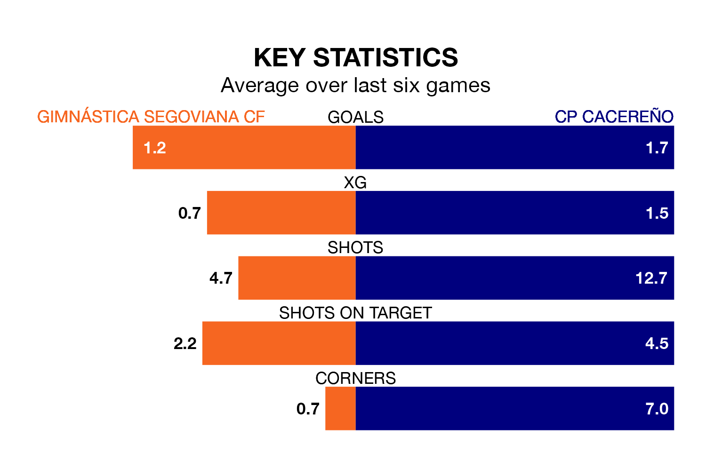

Gimnástica Segoviana CF host CP Cacereño in Sunday's late match at Estadio Municipal de La Albuera looking to bounce back from defeat last time out in the Segunda División RFEF Group 5.
Gimnástica Segoviana, who sit third in the league after 27 games, fell to a 1-0 away defeat to Talavera CF on March 24.
They face a CP Cacereño side who secured a draw in their last match, a 1-1 tie with CD Badajoz, and who sit ninth in the table.
With 34 goals in 28 games so far this season, CP Cacereño are scoring more than average in the league with 1.2 goals per game. And they are conceding at an average rate, letting in 31 goals at a rate of 1.1 per game.
Gimnástica Segoviana are also above average scorers, with 1.2 goals per game, compared to a league average of 1.1. They have conceded 0.9 goals per game.
In the last three years, Gimnástica Segoviana and CP Cacereño have played each other on three occasions. They won one each, and they drew once.
Their last meeting was on November 19, when Gimnástica Segoviana won 3-2 away.
The hosts are in mixed form in the Segunda División RFEF Group 5, with three wins and a draw from their last six games.
With three wins and two draws over that period, the away side's form is slightly better – they have taken 11 points from 18, compared to Gimnástica Segoviana's 10.
Updated: 12:39 (UTC), 26/03/24